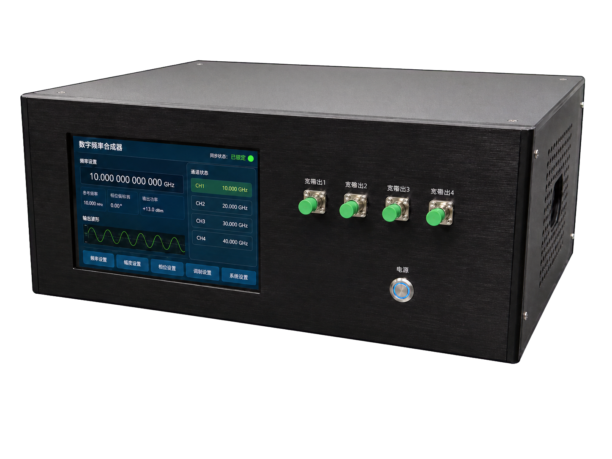

SR-FS01
可编程光学频率合成器
宽范围调谐 · 精细频率设置 · 程序控制
适用于光频校准、精密光谱与自动化光电测试，支持频率切换、扫描流程及数据采集系统联动。
形态
- 30 cm x 15 cm x 20 cm
- 上位机通信接口与下位机触摸屏
- C波段+L波段输出
功能
- 数字化频率设定与闭环控制
- C波段或L波段连续调谐
- 细步进设置与程序扫描
Form Factor
SR-FS系列利用全锁定微腔光频梳提供频率基准，对可调谐激光器实施数字化频率设定与闭环控制，实现C波段或L波段内的连续调谐、细步进设置和程序扫描。
SR-FS01 可编程光学频率合成器：30 cm x 15 cm x 20 cm；上位机通信接口与下位机触摸屏；C波段+L波段输出

Functions
每个系列下的具体型号与功能如下。
SR-FS01
宽范围调谐 · 精细频率设置 · 程序控制
适用于光频校准、精密光谱与自动化光电测试，支持频率切换、扫描流程及数据采集系统联动。
Specifications
| 型号 | 项目 | 典型值 / 范围 | 说明 |
|---|---|---|---|
| SR-FS01 | 输出波段 | C波段+L波段 | 按配置确认 |
| SR-FS01 | 输出功率 | 10 mW | 典型值 |
| SR-FS01 | 频率设定步进 | 10 Hz量级 | 精细频率设置 |
| SR-FS01 | 频率秒稳 | 10^-13 | 典型值 |
| SR-FS01 | 控制方式 | 上位机通信接口、下位机触摸屏 | 程序控制 |
| SR-FS01 | 供电方式 | AC 220V | 标准供电 |
注：参数支持按应用场景定制，最终以实际配置和测试条件为准。
Applications
具有数字化设定和重复输出目标光频的能力，可以在接入可溯源参考后支撑光频校准、仪器标定及实验室频率传递场景。
具有连续调谐和细步进频率设置的能力，支持窄线宽扫描、指定频点驻留及扫描序列编程，可以适应微腔光谱及窄带器件表征场景。
支持频率切换、扫描流程及数据采集系统联动，可以支撑光通信器件测试、光子芯片表征和自动化实验平台集成。